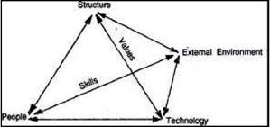

ARM402 :: Lecture 05 :: ENTREPRENEURIAL PROCESS AND STRUCTURE, BARRIERS TO ENTREPRENEURSHIP

Entrepreneurial Process
Entrepreneurial Process is a leadership function which centres round the dynamics of entrepreneurial growth and change. It is a process comprising several distinct stages.
The first stage in the entrepreneurial process is some change in the socio-economic environment leading to changes in the every aspect of life in the country. Inter alia, the change creates needs for new goods and services. The second stage is by starting a new venture. The third process is intrapreneurship. It is the process of extending the enterprises domain of competence by exploiting new opportunities through new combinations of its available resources. The fourth process is to coordinating the varied activities to achieve the entrepreneurial goal.
Entrepreneurial Structure
Structure represents the formal, official task relationships of people in entrepreneurial activities. In other words, structure is the logical culmination of authority and responsibility at different levels. It implies a system. In entrepreneurial activity, policies, programmes, practices and measurement make possible for innovation and growth. They create the proper attitudes and provide the proper tools.

Entrepreneurial Structural Relationship
Entrepreneurial activity confines to the tasks of planning, directing, controlling, marketing, leading, motivating and channelising the activities of individuals and the groups towards entrepreneurial goal. The structure and relationships should be such that they allow people to be entrepreneurial. The main requirements of such a structure are as follows:
- The new enterprise should he organized separately from the existing.
- There should be a special law for the new venture.
- The new enterprise should be the specific responsibility of entrepreneur /
intrapreneur in top management.
- The new innovative project requires different policies, rules and evaluation
criteria.
- The entrepreneur is accountable for the success or failure of the enterprise.
- The returns on innovation are distinctively different from existing business.
- An. entrepreneurial project requires right relationship, right rewards and right
working culture.
A business that wants to be able to innovate wants to have a chance to succeed and prosper in a time frame of rapid change has to build entrepreneurial management into its own system. It has to adopt policies, principles and practices that create through the entire organization the desire to innovate and the habits of entrepreneurship and innovation. To be a successful entrepreneur, the existing business, large or small has to be managed as an entrepreneurial business. Entrepreneurial structure is thus the corner stone of success in business, whether it is in production or marketing or service. The empirical studies have shown that the solid structure determines the growth potential of entrepreneurial activities.
Barriers to Entrepreneurship
- A large number of entrepreneurs particularly in the small enterprises fall due to several problems and barriers.
- Lack of a viable concept.
- Lack of market knowledge
- Lack of technical skills
- Lack of seed capital
- Lack of business know-how
- Complacency - lack of motivation
- Social stigma
- Time presences and distractions
- Legal constraints and regulations
- Monopoly and protectionism
- Inhibitions due to patents
| Download this lecture as PDF here |